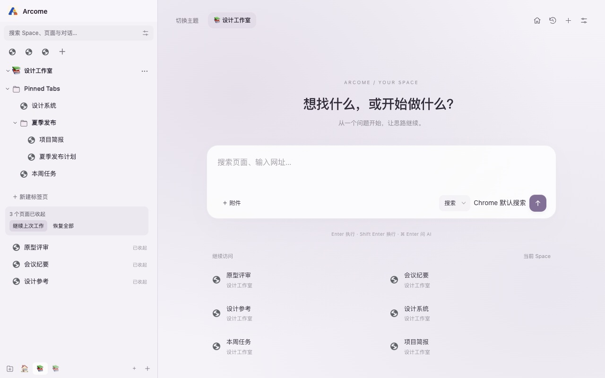
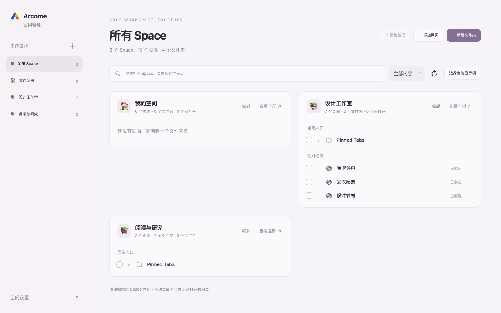

Chrome 工作区扩展
从 Arc 搬到 Chrome，带上你的 Space。
在左侧栏切换 Space，用固定页和文件夹整理常用网页。暂时不用的页面可以收起，需要时再打开。
在 Chrome 应用商店查看看看 Space 怎么用


顶部收藏跨 Space 共享。每个 Space 分开保存固定页、文件夹和临时页。收起临时页后，记录仍在，可以逐个恢复。


左侧按 Space 筛选。右侧可查找、多选和移动网页或文件夹。
Chrome 工作区扩展
在左侧栏切换 Space，用固定页和文件夹整理常用网页。暂时不用的页面可以收起，需要时再打开。
在 Chrome 应用商店查看
顶部收藏跨 Space 共享。每个 Space 分开保存固定页、文件夹和临时页。收起临时页后，记录仍在，可以逐个恢复。

左侧按 Space 筛选。右侧可查找、多选和移动网页或文件夹。